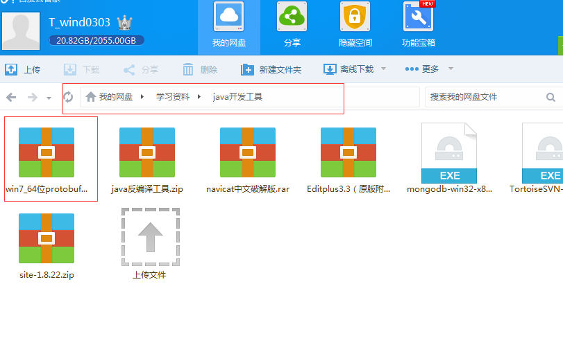

第一：下载protobuf-2.5.0.zip和protoc-2.5.0-win32.zip，然后把protoc-2.5.0-win32.zip里的protoc.exe放到protobuf-2.5.0\src\下。
第二：安装
python，且将python安装环境放入path环境变量下。
第三：
切换到protobuf-2.5.0\python ，
执行以下三个命令：>
python setup.py build >python setup.py test >python setup.py install 。
第四：测试命令 protobuf-2.5.0\src>protoc -I=F:\workspace --java_out=F:\workspace --cpp_out=F:\workspace F:\workspace\User.proto
所需安装软件已上传至百度云：

User.proto文件如下：
package test;
option java_package = "com.example.test";
option java_outer_classname = "TestUserProtos";
message User{
required int32 id =1;
required string name =2;
required double weight =3;
required double height =4;
required int32 age =5;
}